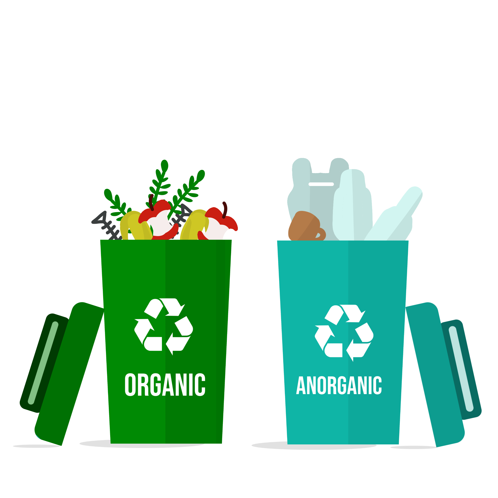
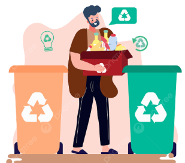
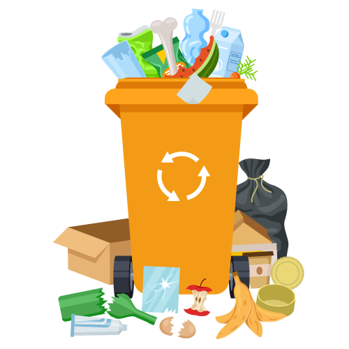

INFORMASI

JENIS SAMPAH
Sampah dapat dibedakan menjadi dua macam, yaitu: Sampah Padat (Anorganik) dan Sampah Basah (Organik)

PENGELOLAAN SAMPAH
Reduce ( mengurangi), Reuse (menggunakan kembali), Recycle (mendaur ulang), Replace (mengganti) dan Replant ( menanam kembali)

DAMPAK NEGATIF SAMPAH
Dampak membuang sampah sembarangan akan mendatangkan banjir dan mendatangkan berbagai penyakit dan dapat mencemari lingkungan